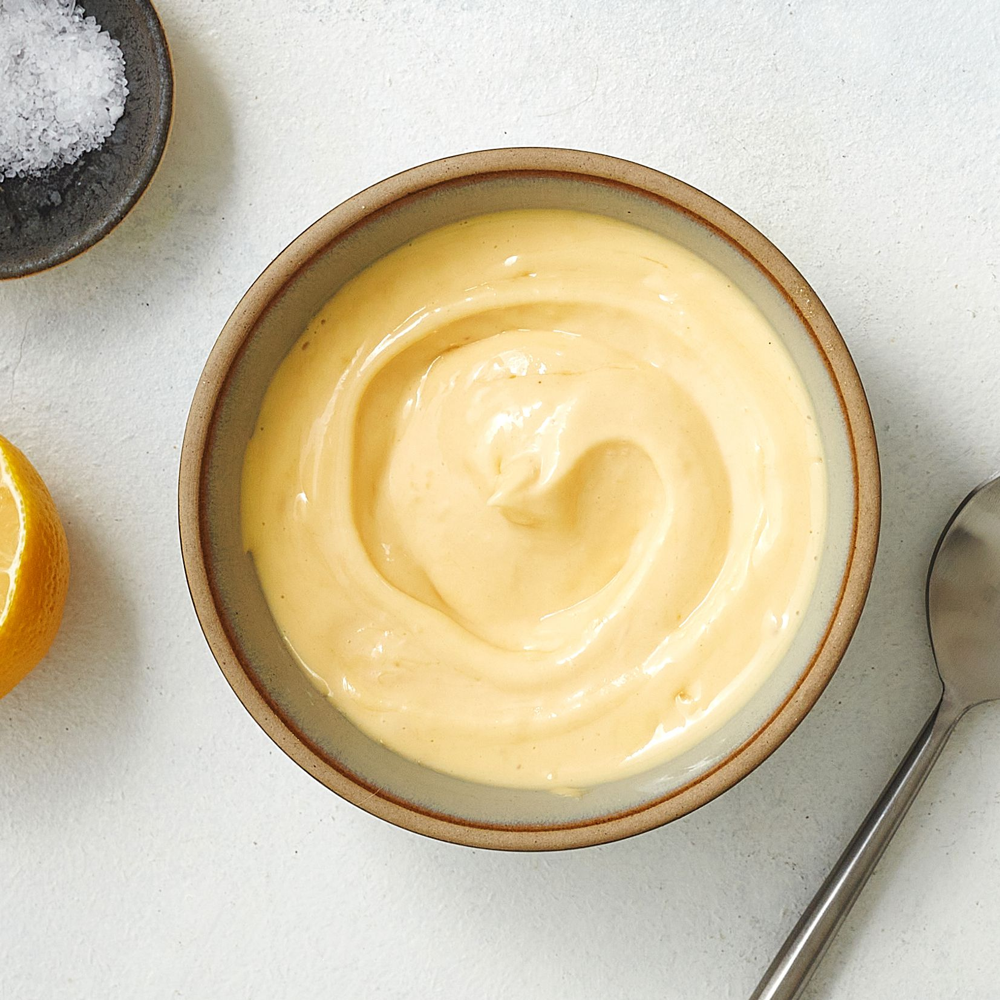

Mom's Mayo

Description
Someday, a real rain will come and wash all this scum off the streets. Until then, enjoy this recipe for Mom's Mayo.
Ingredients
- 1 large egg, room temperature.
- 1 tablespoon dijon mustard
- 1 tablespoon red or white wine vinegar.
- 1/4 teaspoon salt. Preferably kosher.
- 1 cup canola oil. Don't fuck around and use regular vegetable oil, alright?
- 1 teaspoon lemon juice
Steps
- Blend it all. Hey, make sure you crack the egg first. No shells, I mean it.
- If it's too thin for you, use more oil. Remember: more oil means more pushups and situps added to your routine.
- Put that in the fridge three days at least. Stay awake until it's finished.
- Note: you can throw a little yellow mustard in here to give it a zing. If you want.
- Enjoy.
BACK TO HOME